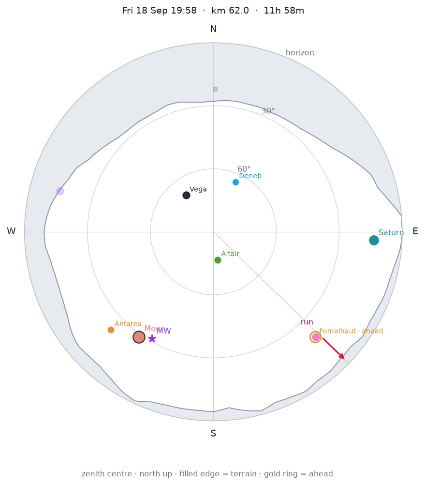

Moon first quarter, 47% lit, 29° SW (216°). Milky Way centre 31° SW (210°). Overhead: Aquila, Cygnus, Lyra.


Planets
- Saturn: 13° E (93°), mag 0.4
Constellations
- Overhead: Aquila, Cygnus, Lyra
- Up: Andromeda, Aquarius, Capricornus, Cassiopeia, Cepheus, Corona Borealis, Draco, Ophiuchus, Pegasus, Sagittarius, Serpens
- Rising: Cetus, Grus, Pavo, Piscis Austrinus
- Setting: Scorpius
Bright stars
- Vega (Lyra): 68° NW (323°), mag 0.0
- Altair (Aquila): 77° S (172°), mag 0.8
- Antares (Scorpius): 22° SW (226°), mag 1.0
- Fomalhaut (Piscis Austrinus): 20° SE (136°), mag 1.2
- Deneb (Cygnus): 64° NE (24°), mag 1.2
Other stops this night
- km 66 · Fri 18 Sep 20:36
- km 76 · Fri 18 Sep 23:04
- km 86 · Sat 19 Sep 01:31
- km 90 · Sat 19 Sep 02:23
- km 94 · Sat 19 Sep 03:28
- km 99 · Sat 19 Sep 04:37
Same sky, different place: Night 2 · best stop km 152.
References
- Altair · Grokipedia · Wikipedia
- Andromeda · Grokipedia · Wikipedia
- Antares · Grokipedia · Wikipedia
- Aquarius · Grokipedia · Wikipedia
- Aquila · Grokipedia · Wikipedia
- Capricornus · Grokipedia · Wikipedia
- Cassiopeia · Grokipedia · Wikipedia
- Cepheus · Grokipedia · Wikipedia
- Cetus · Wikipedia
- Corona Borealis · Grokipedia · Wikipedia
- Cygnus · Grokipedia · Wikipedia
- Deneb · Grokipedia · Wikipedia
- Draco · Grokipedia · Wikipedia
- Fomalhaut · Grokipedia · Wikipedia
- Grus · Grokipedia · Wikipedia
- Lyra · Grokipedia · Wikipedia
- Milky Way centre · Grokipedia · Wikipedia
- Moon · Grokipedia · Wikipedia
- Ophiuchus · Grokipedia · Wikipedia
- Pavo · Grokipedia · Wikipedia
- Pegasus · Grokipedia · Wikipedia
- Piscis Austrinus · Grokipedia · Wikipedia
- Sagittarius · Grokipedia · Wikipedia
- Saturn · Grokipedia · Wikipedia
- Scorpius · Grokipedia · Wikipedia
- Serpens · Grokipedia · Wikipedia
- Vega · Grokipedia · Wikipedia